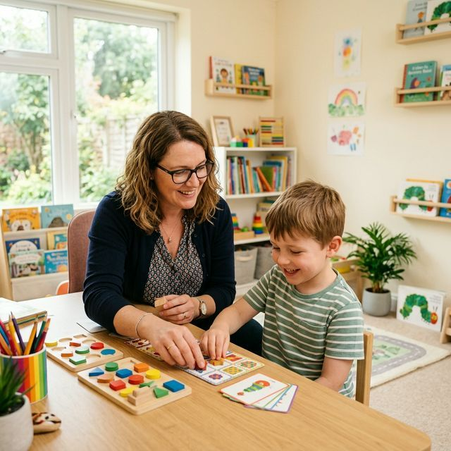

Nuestros Servicios de Apoyo Integral
Brindamos un acompañamiento profesional y cálido, diseñado para potenciar el desarrollo, la autonomía y el bienestar emocional de cada niño, niña y sus familias.

Áreas de Intervención
Conoce nuestras especialidades diseñadas para abordar las necesidades de desarrollo desde una perspectiva multidisciplinaria.
Apoyo Psicopedagógico
Enfocado en el proceso de aprendizaje. Evaluamos y potenciamos las estrategias cognitivas para superar dificultades académicas y fomentar el disfrute por aprender.
Atención Psicológica
Apoyo emocional y conductual. Brindamos un espacio seguro para expresar emociones, manejar la ansiedad y desarrollar herramientas para una salud mental positiva.
Terapia Ocupacional
Desarrollo de autonomía y habilidades diarias. Trabajamos la integración sensorial y la motricidad para lograr una participación plena en las rutinas cotidianas y escolares.
Educación Diferencial
Estrategias personalizadas de enseñanza. Adaptamos metodologías y materiales para asegurar que cada niño alcance sus objetivos educativos respetando su ritmo y estilo.
Orientación y Acompañamiento Familiar
Herramientas para el hogar. Empoderamos a las familias con estrategias prácticas para apoyar el desarrollo de sus hijos y fortalecer los vínculos afectivos.
Trabajo Social
Gestión de recursos y red de apoyo. Conectamos a las familias con redes comunitarias e institucionales, garantizando el acceso a los derechos y beneficios correspondientes.
¿Necesitas orientación profesional?
Nuestro equipo multidisciplinario está listo para evaluar y diseñar un plan de apoyo adaptado a las necesidades de tu familia.